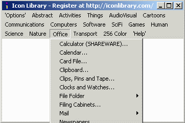
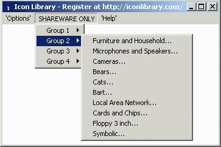
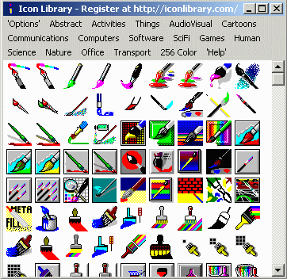
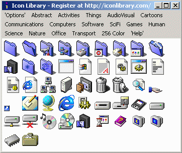
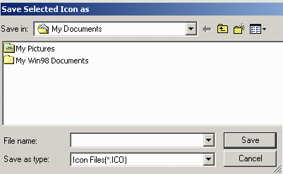
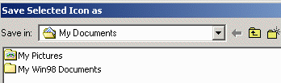
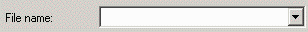
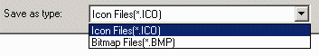

Most of the remaining menu items are provided to help you select
one of the icon categories from the hundreds available in the
registered version of Icon Library...

...or a smaller number of samples in the shareware
collection.

Please note that in the shareware version of Icon Library,
many of the categories are not available. The ones that are available
have (SHAREWARE) as part of the menu description An example
can be seen in the calculator selection in the first image
above. All categories are available in the registered version
of the program.
When you select one of the icon categories from the menu, the
icons in that section of the library will be displayed. Each menu
selection will display a collection of icons that have a common
theme. The icons have also been sorted within these categories to
make any particular image easier to find. A scroll bar will appear
if there are more icons available than what can be displayed in the
Icon Library window. To see the remaining icons, just scroll down
or increase the size of the window.

Although most of the collection of icons in Icon Library are
the standard 32x32 pixel images with up to 16 colors, the Icon Library
viewer program is capable of handling most other formats of icons as
well. It can display 256 color images, however, only the ones which are
32x32 pixels in size will be displayed when there are multiple image
sizes in an icon file. For example, a particular ICO file may
contain 3 seperate icons, 16x16 pixel 256 color, 32x32 pixel
256 color, and 48x48 pixel 256 color. Only the 32x32 pixel 256 color
icon will be displayed in the viewer, however, all three will be
saved if that icon is extracted from the Icon Library collection.

You can extract any of the icons by moving the cursor over
the one you want and clicking the left mouse button. A window called
Save Selected Icon as will appear so that you can specify
the folder, filename and format of the icon you wish to save.

Specify the folder where the icon is to be stored.

Specify the filename you want to call the icon or bitmap.

Decide if you want to save the image as an icon or a bitmap.

If you save in the ICO format, a single file will be created
containing one or more icon images, one for each size or color depth.
If you save as BMP images, one or more Bitmap files will
be created, one file for each each size or color depth. You can also
specify a color to be shown
where the Bitmap image is transparent to the background. Try saving
icons from the 256 color samples in ICO and BMP formats for practice.
Click on the Save button if you want to proceed with saving
the images, or click the Cancel button if you decide you don't
want to save the image.
IMPORTANT: Although Icon Library can display icons that
are contained in Windows EXE and DLL files, it cannot
extract these icons reliably from these files. I will try to fix
this deficiency in a future release of Icon Library of possible.
The next section shows how to
customise the menus to suit your
own needs.